J.A.R.V.I.S.,
Put It on My Phone
The game now comes as an app for iPhone and iPad, to install yourself with a free Apple ID. Game links open the game you have installed: on Android a link opens the app, and on a computer the web version's replay screen offers to open the desktop app. Undo past your turn is now off by default and Manual adjust waits behind a setting, so a game counts unless you choose otherwise. The Saga shelf says when a win was adjusted, an iPhone no longer gets stuck loading, and shared discounts like Avengers Tower's work for every player.
Platforms with an app
Android, iPhone and iPad, Windows, macOS and Linux, plus the browser.
New mod cards
in 6 fan-made packs, coming to the Mod Store after this release.
Reports and ideas
5 reports and 4 suggestions from @bluefireF5ran.
The game on iPhone and iPad
Every release now has an iPhone and iPad app. It isn't on the App Store: you install it yourself with a free tool and your own Apple ID, no jailbreak, in about 15 minutes the first time. On an iPhone or iPad, the website's Download button leads straight to the steps and the app's download.
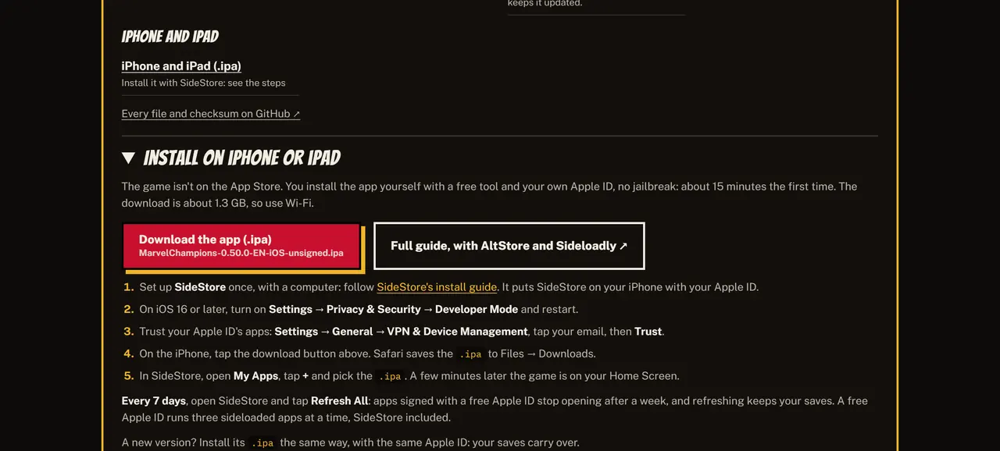
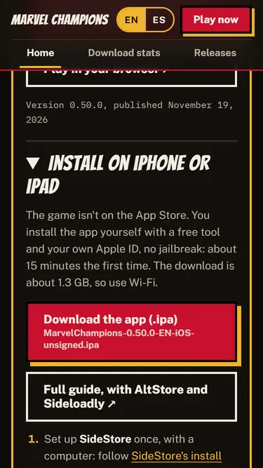
How to install it
- SideStore, on the phone itself after a one-time setup with a computer, is the one we recommend. AltStore and Sideloadly work from a PC or Mac.
- The step-by-step guide is in English and Spanish, linked from the website.
Good to know
- With a free Apple ID, refresh the app every 7 days. Refreshing keeps your saves.
- A free Apple ID runs three sideloaded apps at a time, the installer included.
- A new version installs the same way, with the same Apple ID, and your saves carry over. The game's update notice links the release page.
We need your iPhone. I don't have one, so the app hasn't been tried on a real iPhone yet. If you install it, tell us how it went on the community Discord or with Pause ▸ Report a problem, so the guide matches what you see.
Batch 2 of the Mod Store
Six new fan-made packs, 113 new cards, every one in English and Spanish. Four hero packs, a scenario and a house rule for Hulk, from the Mod Store's creators. They use what this release's Mod SDK adds, so they arrive in the Mod Store once v0.51.0 is out.
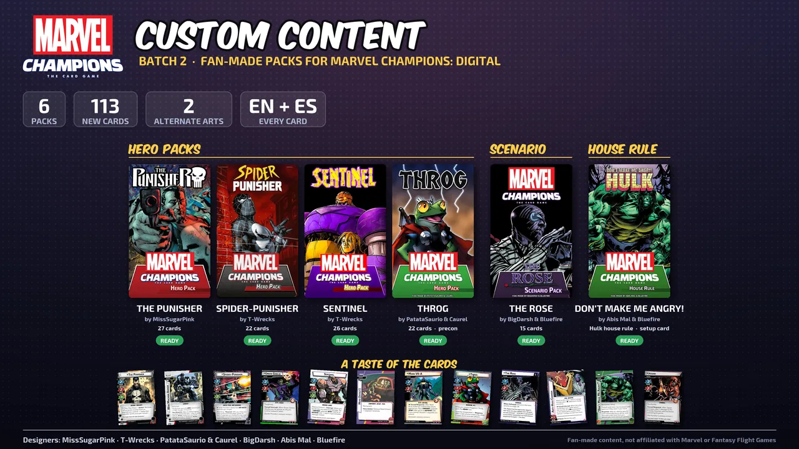
Hero packs
- The Punisher MissSugarPink · 27 cards · precon
- Spider-Punisher T-Wrecks · 22 cards · precon
- Sentinel T-Wrecks · 26 cards · precon
- Throg PatataSaurio & Caurel · 22 cards · precon
Scenario and house rule
- The Rose BigDarsh & Bluefire · 15 cards
- Don't Make Me Angry! Abis Mal & Bluefire · Hulk
Install them from the Title's Mod Store once they're listed. Every card has its Spanish text.
"Don't Make Me Angry!"
This house rule gives Hulk's deck a new upgrade, a Permanent card that starts the game in play (Setup). Tucked cards under it may be played and spent as if they were in your hand.
Response: after an identity-specific card is discarded by an ability, tuck that card under it from your discard pile. Limit twice per phase.
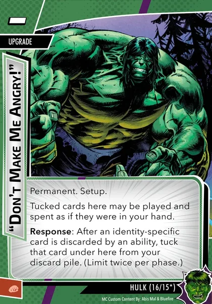
For pack makers: the Mod SDK can now set modular sets aside for a scenario, play a card from the discard pile, flip a card or take unpreventable damage as a cost, offer either/or costs, use another card's Action, and let a deck take identity-specific cards from outside the identity's set. That's what the batch is built on (#890, #891, #903, written by @bluefireF5ran).
Links that open the game
A shared replay link now opens the game you have installed, not a browser tab. On Android it happens on its own. On a computer, the web version's replay loading screen has an Open in the desktop app button above Cancel.
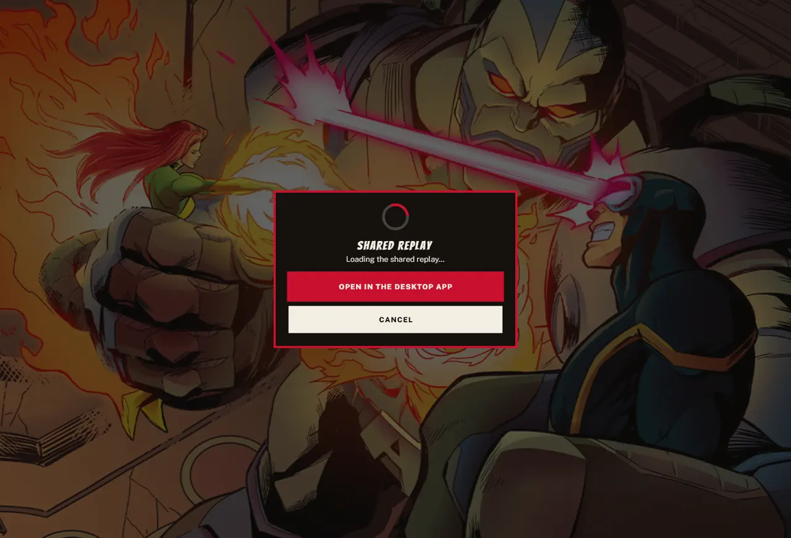
On Android
With the app installed, a link to marvel.champions-digital-game.com opens the app. A shared replay link goes straight to its replay.
On a computer
- The desktop app now answers marvelchampions:// links, which is what Open in the desktop app uses.
- A link clicked while the game is open goes to that game and brings it forward, with no second window.
- The button only shows in a desktop browser, not in the apps or on phones and tablets.
Heads up: links start opening the app once you have installed v0.51.0, since the installer is what tells your system about them.
Every game counts, unless you say so
The two ways to bend a game are now off until you turn them on. A game where you use them stops counting toward your stats, achievements and champion points, and now the game tells you that before you switch them on. Both were suggested by @bluefireF5ran.
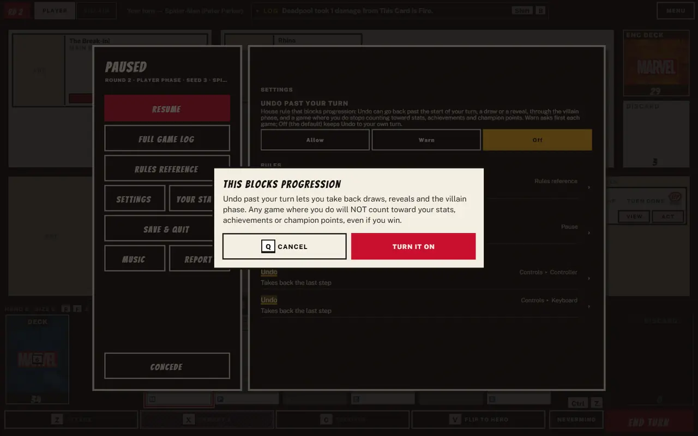
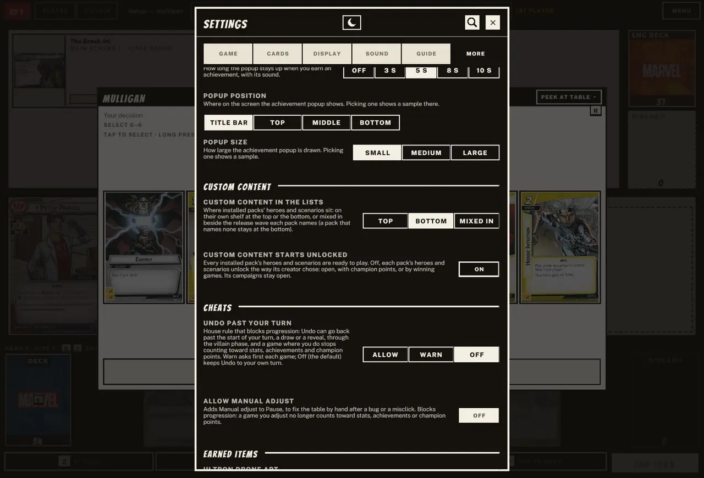
- Undo past your turn is now Off by default. If you never changed it, it moves to Off. If you picked a setting, you keep it.
- Manual adjust leaves Pause until Allow manual adjust is on. Both settings now sit together under Settings ▸ More ▸ Cheats (#899).
- The deck builder lists cards that start the game outside your deck (Permanent and Setup cards, Valkyrie's Death-Glow, Rogue's Touched) first, in their own Setup group (#895). Your deck size doesn't change.
You asked, we fixed
The Saga shelf now tells you when a win was adjusted. bktanner finished The Rise of Red Skull, and Galaxy's Most Wanted stayed sealed with no reason given. A campaign with an adjusted game in it (Pause ▸ Manual adjust, or an Undo past a reveal) earns no unlocks, so its win doesn't open the next volume. The shelf didn't know that. Now it does, and says so.
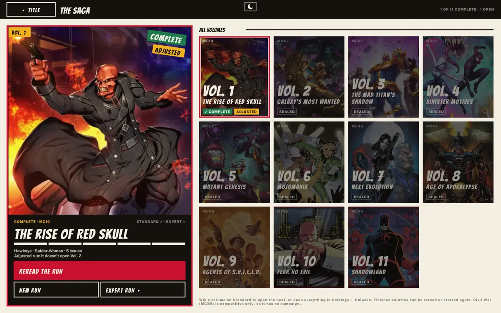
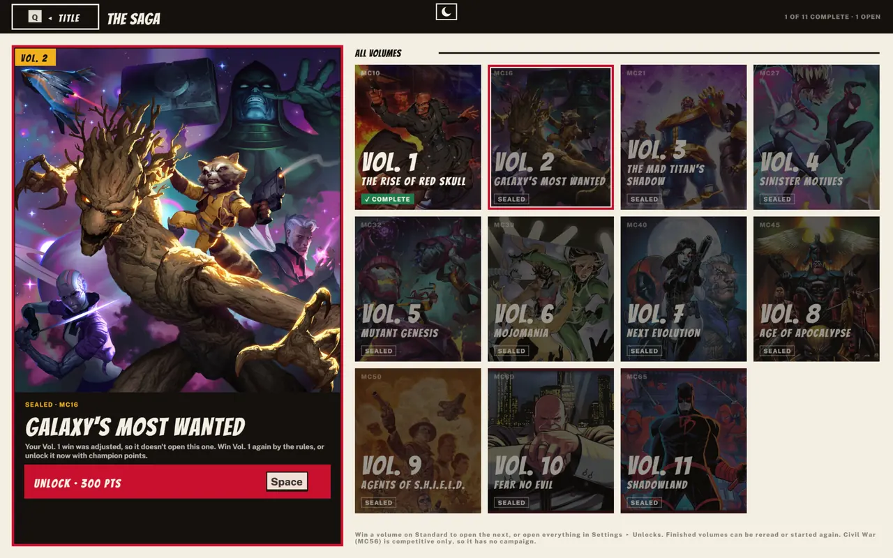
What the shelf shows
- An amber ADJUSTED stamp under COMPLETE, and an ADJUSTED chip beside ✓ COMPLETE on the volume's tile, when every finished run of that volume was adjusted.
- The sealed volume says to win the last one again by the rules, or to unlock it now with champion points.
- An adjusted Standard win still opens that box's own Expert Run.
- The COMPLETE stamp is now solid green with white text, and sits on the card instead of running off its edge.
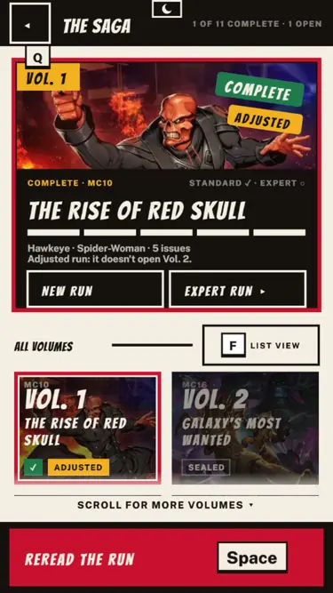
On iPhone, the game no longer gets stuck loading. GarethMagis kept landing on "The game did not start" mid-play. iOS was closing the tab to free memory and loading it again, and on that reload the game waited forever to read your saves.
- The start now waits at most six seconds for your progress, then goes on to the Title.
- If your saves still haven't been read, the Title says Your saves haven't loaded, with a Reload button, instead of showing a menu with no games on it.
- iPhones and iPads keep half as many card pictures in memory, so iOS reloads the tab less often.
- If it still happens after a few fights, setting Render resolution lower in Settings saves more memory.
Campaign upgrades keep their side
After Zola, The Rise of Red Skull has you swap your Basic Condition upgrade for its Improved side. The log kept it, but the Red Skull game still dealt it Basic. It now enters on the side the log records. In Sinister Motives, reputation 13 now flips your S.H.I.E.L.D. Tech to its Enhanced side at each later scenario's setup.
Issue #873 from bktanner · PR #877
Discounts for any player
Avengers Tower, Sure Gamble, Welcome Aboard and Soup Kitchen discount the next matching card any player plays, and Steve Rogers' Living Legend the first ally any player plays each round, not only their own controller's. The Spider-Man (Peter Parker) ally can ready a teammate's Web-Warrior too.
Issue #888 from FirePenguin17 · PR #889
Replays finish the villain phase
With Reduced motion on, a replay stopped at the villain phase's recap, on Start player phase. Now it closes the recap and plays on by itself.
Issue #892 from @bluefireF5ran · PR #896
Size Increase shrinks
Ant-Man's nemesis attachment came in with no size counters, so it never left the enemy it was attached to. It now comes in with 3, loses one each time that enemy activates, and is discarded with the last.
Issue #897 from @MegaJesup · PR #898
Also in v0.51.0
- The website's home, Download stats and Releases pages share one top bar, with the nav, English and Español, Steam, Download and Play now, and the stats and releases pages open on hero art like the home page (#866).
- The website's Mod Store section has a tab for each batch's poster, batch 2 first, and lists the packs under Batch 2 and Batch 1.
- The download stats page no longer compares its count with the releases before v0.19.0.
- Pull request previews now carry an iPhone build and an iOS Simulator build, as they do an Android one.
- The README's download buttons point at v0.50.0.
- This report, in English and Spanish.
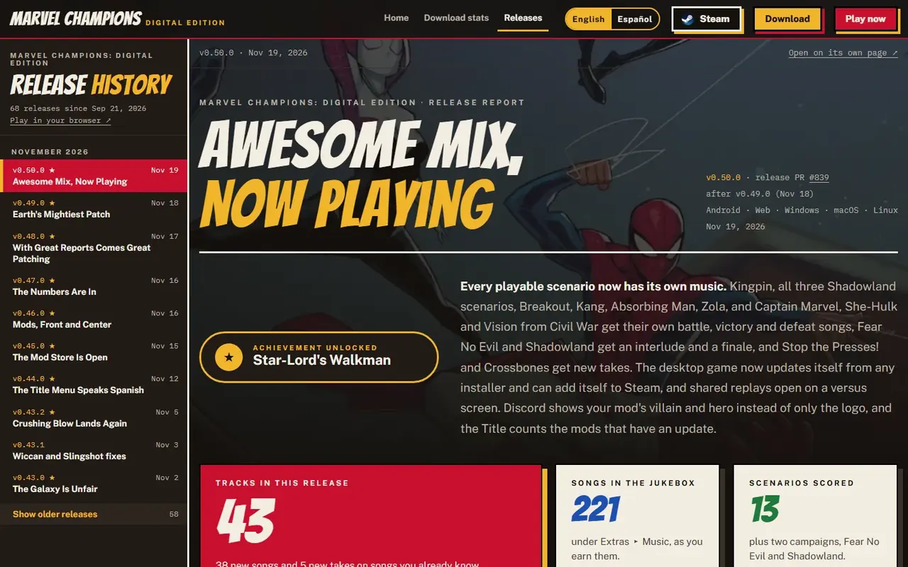

Thank you!
Keep the ideas and reports coming from Pause ▸ Report a problem, a GitHub issue or the community Discord.
@bluefireF5ran
Suggested the Undo and Manual adjust locks and the deck builder's Setup group, reported the replay stop #892, and wrote the Mod SDK work for the batch 2 packs, #891 and #903.
Batch 2's creators
MissSugarPink, T-Wrecks, PatataSaurio & Caurel, BigDarsh and Abis Mal made the six packs, with Bluefire.
bktanner
Reported Galaxy's Most Wanted staying sealed, #869, and Red Skull's Improved Condition, #873, on Discord.
GarethMagis
Reported the iPhone game stopping on "The game did not start", #871, on Discord.
@MegaJesup
Reported Ant-Man's Size Increase staying on Rhino for good, #897.
FirePenguin17
Reported Avengers Tower's discount working only for its controller, #888, on Discord.
Code shipped
Pull requests
merged into main.
Files changed
across the engine, the cards, the client, the apps, the website and this report.
Lines added
the iPhone app, app links, the Mod SDK, the fixes, their tests and this report.
Lines removed
across the same pull requests.